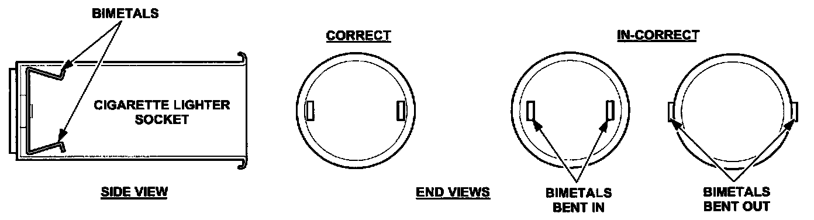
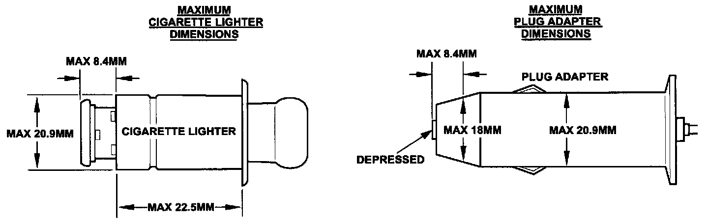

Interior - Cigarette Lighter Does Not Work Properly
Bulletin No.: 007/00Issued: 07/28/00
Revised:
Section
09
Applicable Model/s
Multiple Models
Subject
CIGARETTE LIGHTER DOES NOT WORK PROPERLY
APPLICABLE MODEL(S)/VINS
1997-2001 Protege, MPV, Miata, Millenia.
DESCRIPTION

Some customers may state that their cigarette lighter does not work or stay in position. This concern can be caused by the use of an after-market cigarette lighter or a plug adapter of the wrong size for the cigarette lighter socket. As a result, the cigarette lighter socket bimetals can be bent as shown below and/or the socket retainer ring is broken.

To prevent future concerns, be sure to inform customer of proper usage of power adapters and the necessity of using a cigarette lighter of correct dimensions as shown.
Caution:
^ Repairs are not covered by warranty if the concern was caused by a cigarette lighter or plug adapter not meeting the above dimensions.
Disclaimer